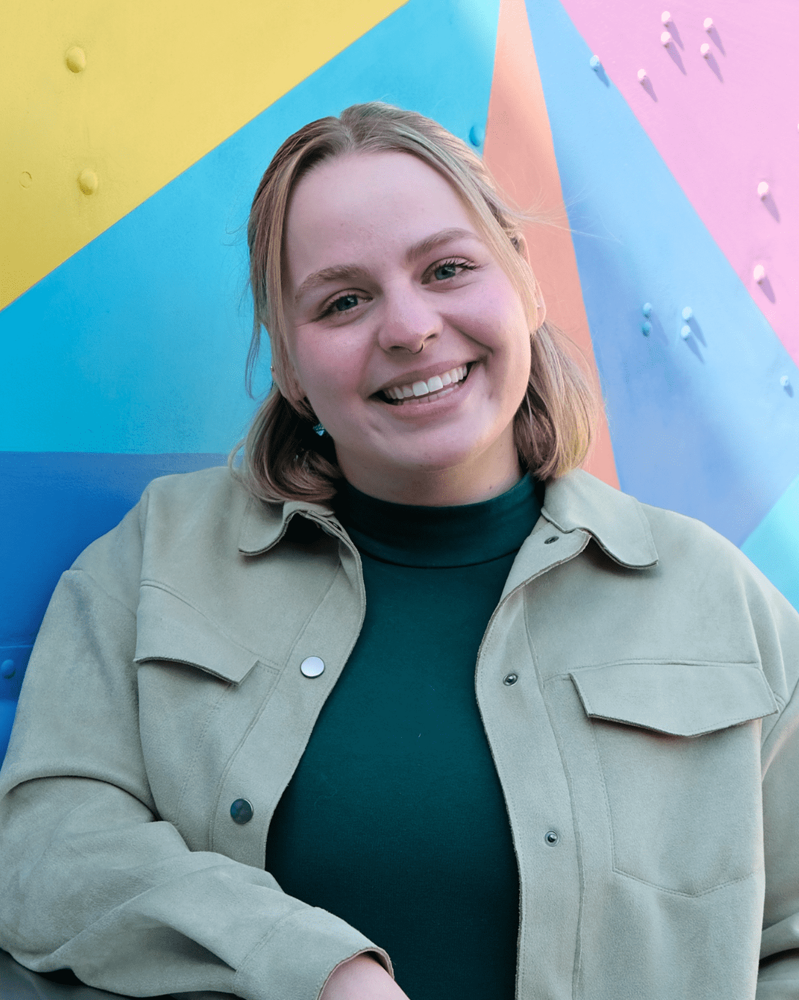

About Me

Hi, I'm Marissa Wolff. I am a dedicated nonprofit professional with a passion for creating positive change and empowering individuals. Through my work, I lead impactful initiatives that drive social progress and aim to make a difference in the lives of those around me. I am currently taking a coding class to enhance my technical skills and better serve the nonprofit I work for. By combining my nonprofit experience with new coding knowledge, I am focused on creating innovative solutions that will help improve the services we provide and further our mission to make a lasting impact.
Skills
- Graphic Design
- Social Media
- Website Development